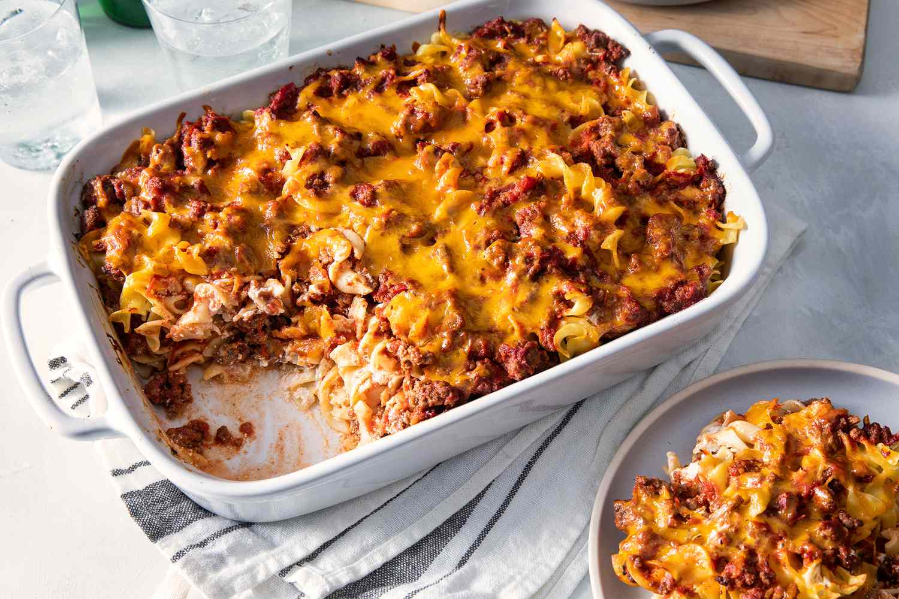

Grandmas Beef Cassrole

My grandmother's old-fashioned hamburger casserole is comfort food at its best! Featuring ground beef, noodles,
and a creamy cheese sauce, this simple recipe dates back to the 1940's. I've tweaked the amount of cheese and
sour cream depending on what I've got in the fridge and it always turns out great! My mother has suggested this
was made up as a way to use up ingredients in the fridge.
Ingredients
- Ground Beef
- Tomato Sauce
- Seasonings
- Pasta
- Sour Cream and Cream Cheese
- Onion
- Cheddar Cheese
Instructions
- Cook the beef in a skillet over medium-high heat until it's brown and crumbly. Drain and discard the grease.
Mix tomato sauce, sugar, garlic salt, and salt into the ground beef and simmer until the flavors blend. Remove
from heat and allow to cool.
- Boil the egg noodles until they're cooked through, but are still quite firm. Drain in a colander and allow to cool slightly.
- Mix the sour cream, cream cheese, and diced onion in a medium bowl until well-combined.
- Layer half of the egg noodles into a greased casserole dish. Top with half of the sour cream mixture, then half of the beef mixture.
Repeat in the same order. Sprinkle the top layer of beef with cheese. Bake until the cheese is melted and golden, about 25-30 minutes.